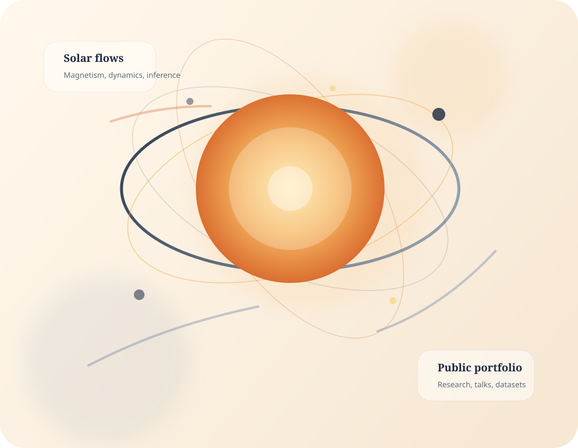

HAO colloquium recording
The Influence of Active Regions on Plasma Flows Inside the Sun.
Selected public appearances with direct links to the source pages and recordings.
The Influence of Active Regions on Plasma Flows Inside the Sun.

A public interview on eclipses and other solar events.

Unveiling the Sun: Exploring the Wonders of Solar Astrophysics.
The Temperamental Sun: Understanding Solar Cycles.
COFFIES session on the seat of the solar dynamo, organized with Shea Hess-Webber and J. Todd Hoeksema.
Science of the Solar Poles session organized with Lisa Upton.
Workshop participation and seminar contributions through COFFIES and KIPAC public programming.
Coverage in Stanford Report, the San Francisco Chronicle, and other public outlets on aurorae and solar maximum.